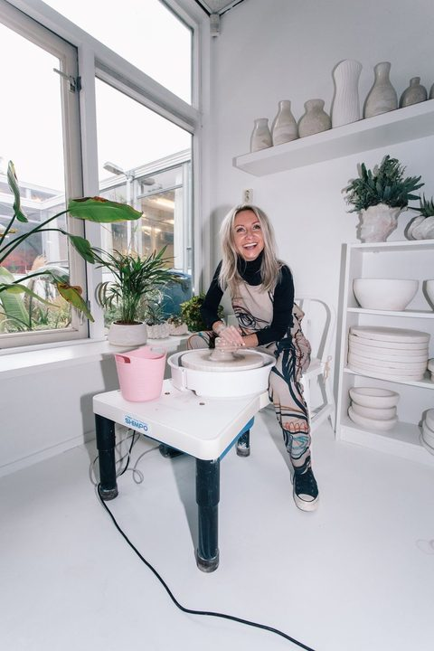
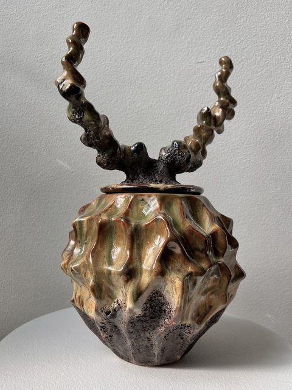

Maison d'ArtisteSixth floor — The Drawing Room / The Dining Room / The Conservatory / The Parlour · throughout the rooms All makers →
Inge Bečka
Porcelain pushed past its own restraint — folded, curled and stacked into forms staged to look spontaneous while every gesture is controlled. Made between the Beemster and Jingdezhen, China.
—In the programme The full programme →
Artist talk
Thursday 17 September 2026 · 13:00 – 13:15 · Sixth floor
Fifteen minutes with the maker about her work, and about her artist residency in China.
Artist talk
Saturday 19 September 2026 · 13:00 – 13:15 · Sixth floor
Fifteen minutes with the maker about her work, and about her artist residency in China.

01Work14 recorded


02Practice
Inge Bečka was born in The Hague in 1963 and works porcelain the way other sculptors work bronze, pushing a material known for restraint into folds, curls and stacked ridges that look improvised but are staged with total control. Since 2012 she has spent part of every year working in Jingdezhen, China, the world capital of porcelain, where the technical vocabulary of the material has become second nature to her.
Her forms begin from a single decisive gesture — a fold, a curl, a ridge — repeated across a series until each piece carries its own variation on the same movement. What reads as chance is entirely composed: the material's apparent spontaneity is the result of exact, practised handling, glazed in surfaces that shift between glossy silver, matte steel and gold.
She lives and works in the Beemster and trained under the ceramicist Marjan de Voogd.
03Why this maker, and where
Most of Bečka's work is object, not vessel — pieces built to be looked at rather than used, even where the form recalls something functional.
In Maison d'Artiste that distinction sits inside a room built for living: porcelain pushed to the edge of its own discipline, placed in a domestic setting without being domesticated by it. What happens with a piece after acquisition is, of course, entirely up to its owner.
04In brief
100% of the sale proceeds go to the maker. MADART Foundation takes no commission and holds no exclusive contract. Enquiries go directly to Inge Bečka.
—More makers30 in the register


Aad Kruiswijk
Fourth floor — Gallery 2 · on the floor
8 works


Andreea Pirlica
Second floor — Running presentation
1 work


Anne van Borselen
Fourth floor — Gallery 1
13 works


Arno Hoogland
Fourth floor — Gallery Lounge
10 works


Billie-Jo Krul
Fourth floor — Gallery 4 · on the floor
3 works


Coen Beeksma
Fourth floor — Gallery 4 · on the floor
1 work


Cynthia & Kevin Kars-Boom
Fourth floor — Gallery 4 · on the floor
1 work


Eric Sloot
Sixth floor — The Drawing Room / The Dining Room
3 works


Erwin Woldring
Fourth floor — Gallery 4 · on the floor
2 works


Frank Penders
Fourth floor — Gallery 4 · on the floor
2 works


Frederik Wasseur
Fourth floor — Gallery 4 · on the floor
1 work


Herma de Wit
Ground floor / Fourth floor / Fifth floor — Staircases
3 works


Jan Willem van Elten
Fourth floor — Gallery 4 · on the floor
1 work


Jeroen van Veluw
Fourth floor — Gallery 4 · on the floor
2 works


Jim Bob Ruijgrok
Sixth floor — The Parlour
4 works


Joost de Munnik & Ruud van den Eijnden
Sixth floor — The Conservatory
1 work


Lilia Luganskaia-Kuilder
Sixth floor — The Hall
3 works


Loutje Hoekstra
Fourth floor — Gallery 4 · on the walls
9 works


Maaike Rabbinge
Fourth floor — Gallery 4 · on the floor
3 works


Marc Th. van der Voorn
Fourth floor — Gallery 4 · on the floor
1 work


Marnix Van Strydonck
Sixth floor — The Dining Room / The Parlour
4 works


Maurice Albert Jan
Sixth floor — The Drawing Room / The Dining Room / The Parlour
4 works


Natalia Wyspianska
Sixth floor — The Drawing Room / The Dining Room / The Conservatory / The Parlour · throughout the rooms
12 works


Nicolette de Waart
Sixth floor — The Drawing Room
4 works


Ritsert Mans
Fourth floor — Gallery 4 · on the floor
2 works


Rogier Bosschaart
Fourth floor — Gallery 2 · on the walls
5 works


Sandra Keja Planken
Fourth floor — Gallery 3
8 works


Sophie Wantia
Fourth floor — Gallery 4 · on the floor
1 work


Zowa Rindt
Fourth floor — Gallery 4 · on the floor
1 work